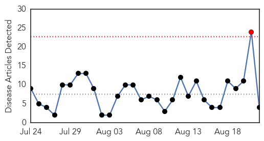
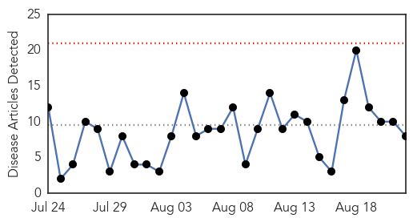
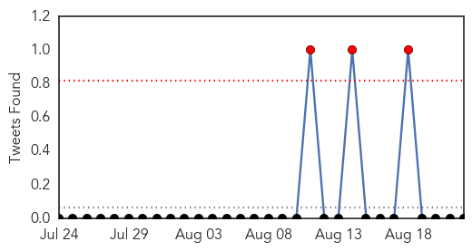
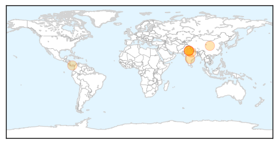
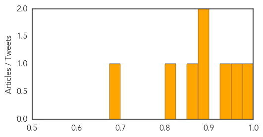

West Nile Virus
30-Day Web Trend
1 alerts, 0 warnings

30-Day Twitter Trend
1 alerts, 0 warnings

Article Locations

Article Confidences

Top Articles:
Top Tweets:
-
No tweets found for Aug 22, 2015
Dengue Fever
30-Day Web Trend
0 alerts, 0 warnings

30-Day Twitter Trend
2 alerts, 0 warnings

Article Locations
Article Confidences
Top Articles:
- 0.993
- Rise in dengue, seasonal ailments in Hyderabad
- 0.962
- Dengue claims one more life, toll six
- 0.946
- Health Authorities Caution Citizens About Rising Menace Of Dengue In Gurgaon, India
- 0.894
- Health Ministry reviews preparedness on Dengue in Delhi
- 0.894
- Taiwan: Dengue fever cases skyrocket in Tainan this summer
- 0.859
- :: News4u :: Health Ministry Holds Review Meeting on Dengue in Delhi
- 0.820
- Countrywide health alert from MoH
- 0.696
- Dengue: Authorities to inspect four hospitals including AIIMS
Top Tweets:
-
No tweets found for Aug 22, 2015